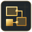

Materials and live colourDevelopment guide — public downloads are currently paused. See Changelog for release status.
Find assets in the docked browser, apply a material to selected brushes, or replace a prop model with a double-click. Face controls expose UV vectors, scale, shift, rotation and lightmap density. Material Editor combines a node view, editable VMT text and a shaded preview; colour changes can be previewed before Apply.
Workflow
- Double-click a material in Assets with brushes selected to apply it. Face → Material provides UV scale, shift, rotation, alignment and lightmap density.
- VMT text has Phong, Reflections and Bumpmap switches. They comment or restore the relevant keys with // while retaining their previous values. Save writes the edited text; Revert restores the file.
- The colour button opens HSV/RGB/HEX controls. Changes preview on the selected object immediately. Cancel restores the original appearance; Apply creates one undoable edit.